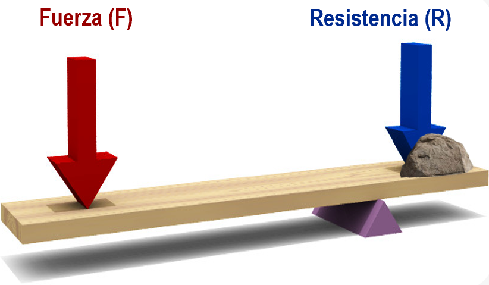
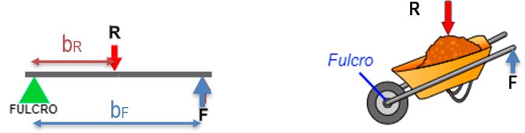

5. PALANCAS
Las palancas son objetos rígidos que giran entorno un punto de apoyo o fulcro (O). En un punto de la barra se aplica una potencia o fuerza (F) con el fin de vencer una resistencia (R). Al realizar un movimiento lineal de bajada en un extremo de la palanca, el otro extremo experimenta un movimiento lineal de subida. Por tanto, la palanca nos sirve para transmitir fuerza o movimiento lineal.

La palanca se encuentra en equilibrio cuando el producto de la fuerza (F), por su distancia al punto de apoyo (d) es igual al producto de la resistencia (R) por su distancia al punto de apoyo (r). Esta es la denominada Ley de la palanca, que matemáticamente se expresa como:
donde:
- F : Fuerza o potencia. Se expresa en Newton (N).

-
bF : Brazo de la fuerza, es la distancia desde el punto donde se ejerce la fuerza al punto de apoyo (fulcro). Se expresa en metros (m).
-
R : Resistencia. Se expresa en Newton (N).
-
bR : Brazo de la resistencia, es la distancia desde el punto donde se encuentra la resistencia a vencer al punto de apoyo (fulcro). Se expresa en metros (m)
Hay tres tipos (géneros o grados) de palanca según se sitúen la fuerza, la resistencia y el punto de apoyo:
-
1º Grado (o género).
-
2º Grado (o género).
-
3º Grado (o género).
5.1 Tipos de palancas
1º grado o género
1º grado
El punto de apoyo (O) se encuentra entre la fuerza aplicada (F) y la resistencia (R).

Dependiendo de la colocación del punto de apoyo:
-
la fuerza a aplicar puede ser menor (si \(b_F>b_R\)),
-
la fuerza a aplicar es mayor (si \(b_F<b_R\)),
-
la fuerza a aplicar es igual (si \(b_F=b_R\)) que la resistencia.
Ejemplos: Balancín, balanza, tijeras, alicate, martillo (al sacar un clavo), remo de una barca, pinzas de colgar ropa….
2º grado o género
2º grado
La resistencia (R) se encuentra entre la fuerza aplicada (F) y el punto de apoyo (O).

La fuerza a aplicar siempre es menor que la resistencia, ya que \(bf>br\).
Se dice que tiene Ventaja Mecánica (VM).
Ejemplos: Carretilla, cascanueces, fuelle, abridor de botellas...
3º grado o género
Note
La fuerza a aplicar (F) se encuentra entre la resistencia a vencer (R) y el punto de apoyo (O).

La fuerza a aplicar es siempre mayor que la resistencia, ya que \(bf<br\).
Se dice que no tiene Ventaja Mecánica (VM).
Ejemplos: caña de pescar, pinzas de depilar, pinzas de hielo, escoba (al barrer), remo de una canoa, banderas, palas de arena..